In the last months, I’ve largely fallen off the blogging wagon. It’s been a necessary and good thing to focus on my family and other obligations that have claimed my attention. But a recent trip to Chicago with my daughter and several friends — and the moms of said young ladies — has brought me a plethora of experiences that beg to be shared.
Therefore, I’m going to try now to do it all justice, by offering a Chicago Trip Rewind. At the very least, I’ll be able to share this wonderful experience with family and friends who caught parts of the highlights on social media as we went along, but who may want a slower, more thoughtful recap.
So for you, Mom, and you, Mom-in-Law Bev, and friends, here we go! Choo-choo!
Day 1 of Chicago started well before Chicago appeared, on the train. We left in the early morning, as is pretty much always the case when taking the train out of Fargo.
As we plotted our transport, we decided having a couple sleeper cars could save our middle-aged bones, given the anticipated 14-hour trip. Amtrak treats its sleeper passengers very well, calling them onto the train ahead of time to get them situated, and being very attentive to their needs. Actually, I found the workers pleasant and congenial throughout the trip, regardless of seating location.
Though I’d been on a train about a handful or more times before this, I’d never experienced a sleeper car. The sleepers are regular seats that face one another by day, and are made into bunks by night. They are enclosed by a glass and metal door so they have a private feel, despite being close together with narrow halls in between. There are even shower accommodations in this section (none of us tried this out, however).
My daughter and I were first to claim our group’s sleeper while the other four, as we’d agreed to ahead of time, settled into seats near each other in the coach area. Being ushered onto the sleeper car at 3 AM felt surreal. I had a fleeting thought of World War II, as we were hurried onto our car, leaving our friends behind. Other passengers were there ahead of us, already sleeping — I could tell from a light snoring emanating from a “room” across the narrow hall. We sat in our little cubby prepared for us in sleeping mode, and waited.
Canvassing the small room, my daughter looked on the top bunk. “Is that so people don’t fall off?” she asked, pointing to the seatbelt-type contraption on the upper bed. “Hmm, it may well be,” I replied. Later, I learned it was indeed.
Suddenly, the train began moving. My daughter’s big brown eyes turned bigger as she watched her friends and their moms pass by from the train window, as in a movie. “Are we leaving without them?” But soon the train stopped again, allowing the rest of the passengers to board.
In our sleeper, two water bottles had been placed for our convenience. I was surprised to see that they’d been labeled with my name — even spelled the French way, like I do.

In my foggy, early-morning state, I wondered if all the passengers in the sleepers received water bottles with their names on the front? Of course, that was not the case at all, only the branding of the water! But it did make me feel welcomed, and seemed to me a sign that our journey was going to go very well.
Just hours before, I’d been at a Sunday evening Mass with my family, praying for safe travels and a God-infused adventure. It was exciting to finally be on our way after months of preparation and days of packing. We’d been planning this trip, with the main destination the Private Bank Theater to see the hit modern musical, “Hamilton,” since October. And now, finally, here we were here and on our way to the “other” Windy City (Fargo makes a run for it often enough).
After my daughter joined her friends in coach, I crawled up to the top bunk. One of the other mothers and I soon were drifting off to the motion of the train on tracks heading east. Again, I thought of World War II and the victims being carted off to the concentration camps in tight, cramped quarters. The soft pillow on which I laid my head, however, assured me, this was another time and place, thank God. But I had a hard time shaking that parallel of old.
Morning announced itself not by light of day, since we’d closed our thick train curtains and all was dark, but with the wonderful aroma of coffee wafting through the cars. Wakey-wakey!

The dining car was near our section, and I looked forward to the experience of breakfast by train.

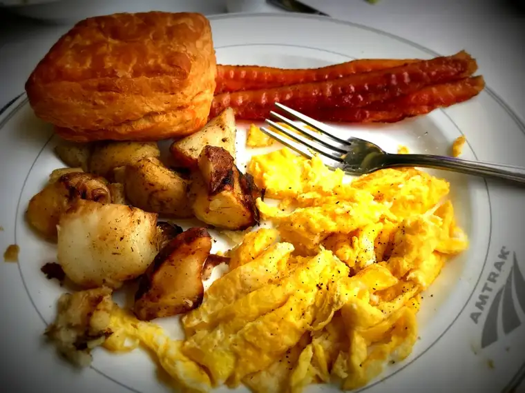
The food was very good, and our route, beautiful and interesting. It made me wonder why more people don’t take the train. I certainly would again!
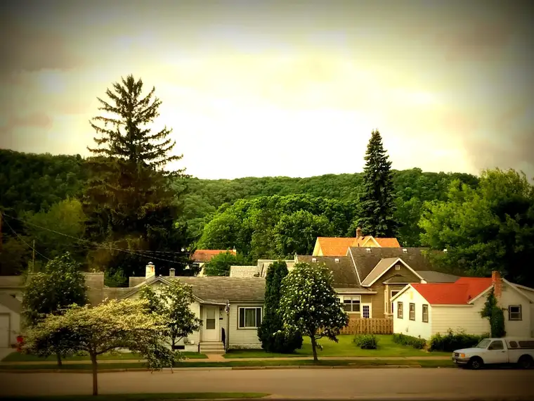
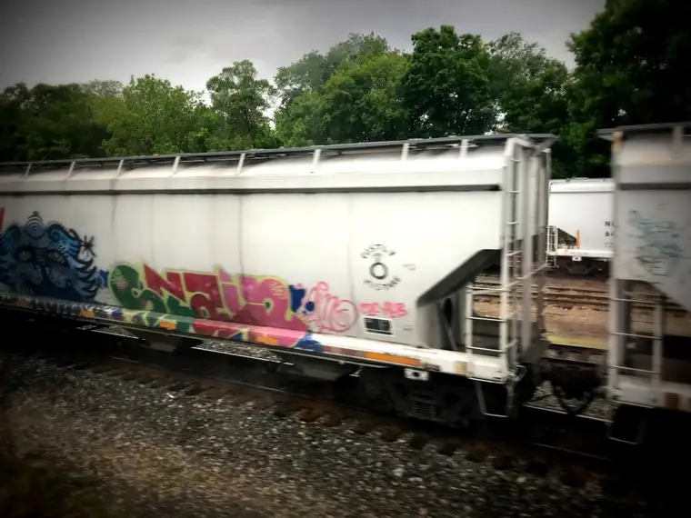
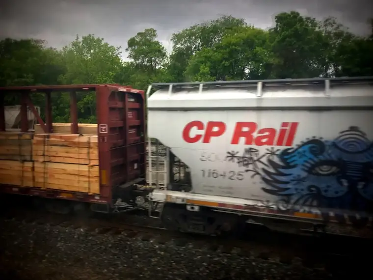
We aren’t used to being on THIS side of the tracks. It was so odd seeing the cars having to wait for us.
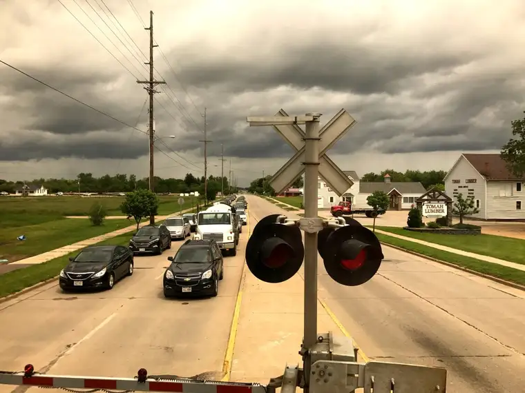
For those wanting to mill about away from their seats, the observation car provided a place to chill with lots of window space.
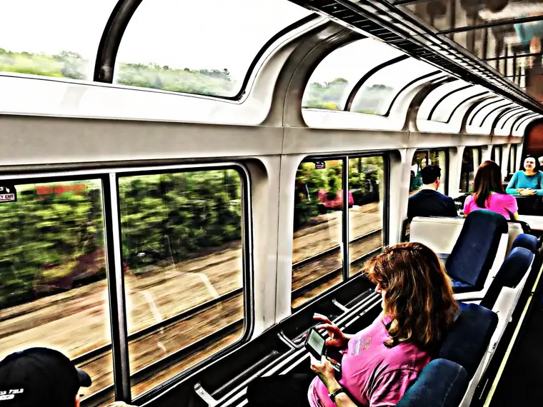
My final moments of the journey took place back in the sleeper car, now made into upright seats…
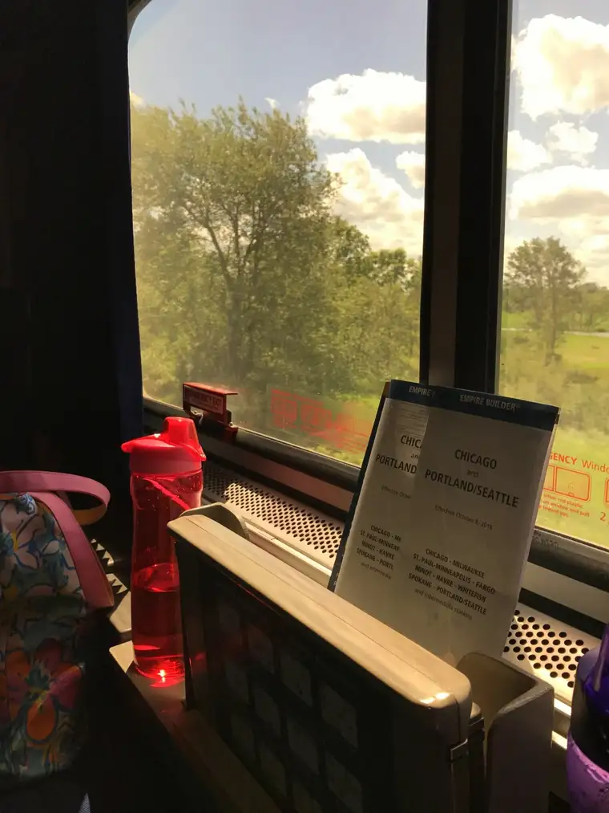
…and it was from there I got my first glimpse of Chicago, which welcomed with pleasant weather.
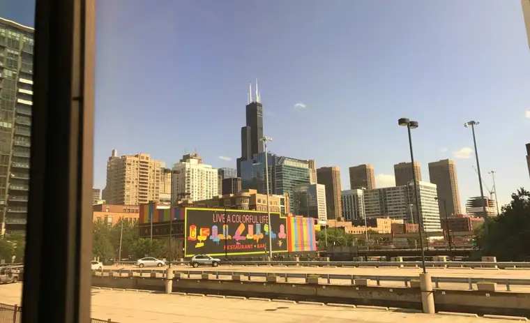
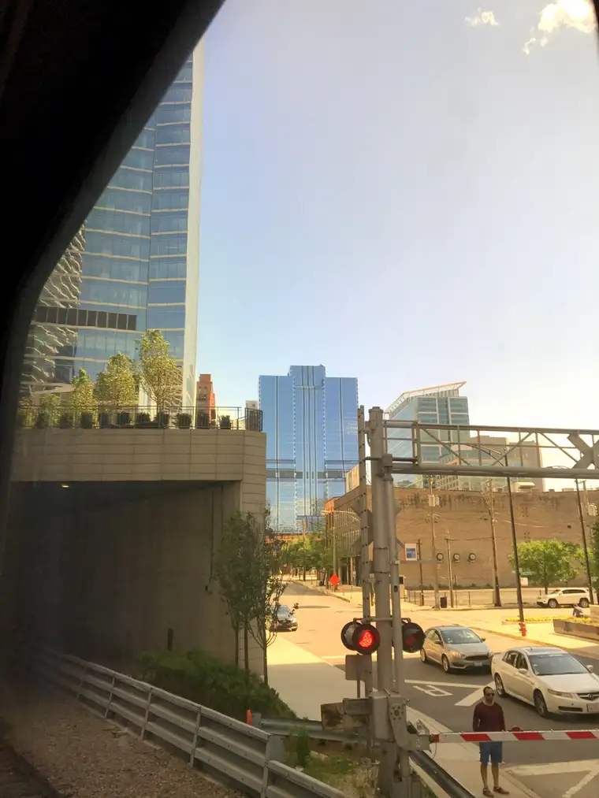
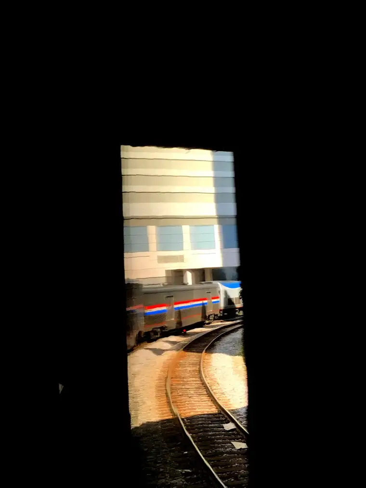
The trip actually took less time than I’d imagined. I don’t think I dipped into my snack bag once, other than for drinks. And I only got through the introduction of the book I’d brought along, thinking I’d finish. Chatting with friends, breakfast, window-gazing and resting — not to mention people-watching (which was fascinating) — took up much of our time.
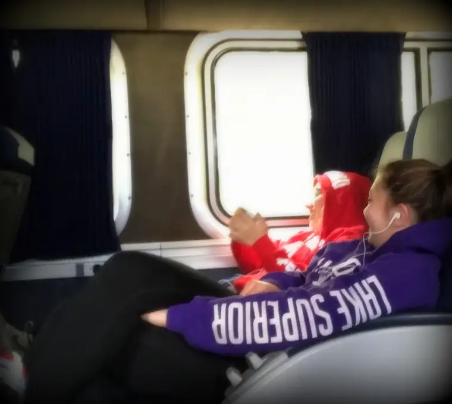
At lunch, we were placed in the dining car with an English couple from north of London, just back from an Alaskan cruise. He looks quiet here, but don’t let this chap on the right fool you; he chatted up a storm.
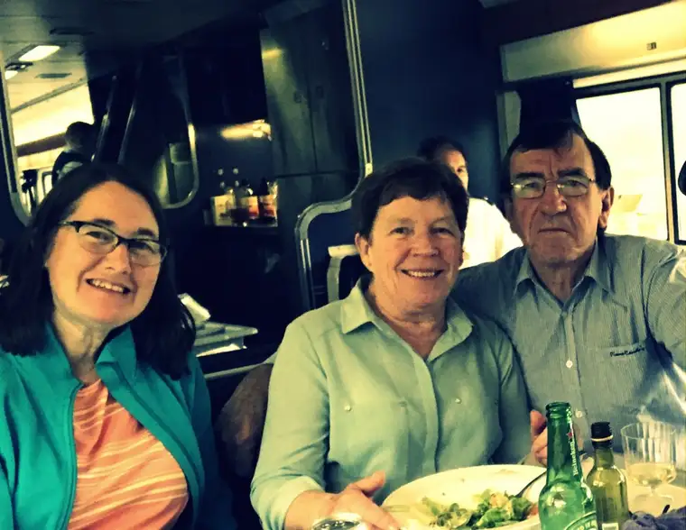
As the city grew closer and we approached the tunnel into the train station, I had the thought that our adventure was just about to begin, and yet, it seemed, it had already started hundreds of miles before.
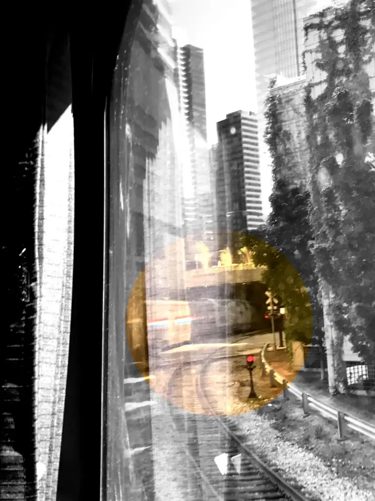
Whew! We made it!
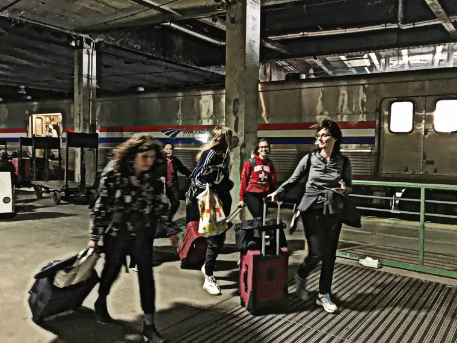
Soon, we were in the midst of the city, calling an Uber driver, ready for our plans to unfold in the unique ways we could only, at that point, imagine.
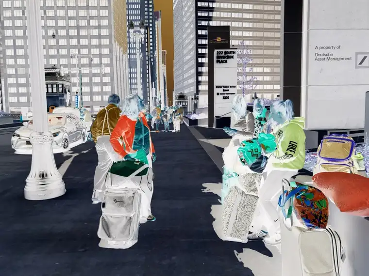
Q4U: Have you ever traveled by train? What are your memories of train travel?